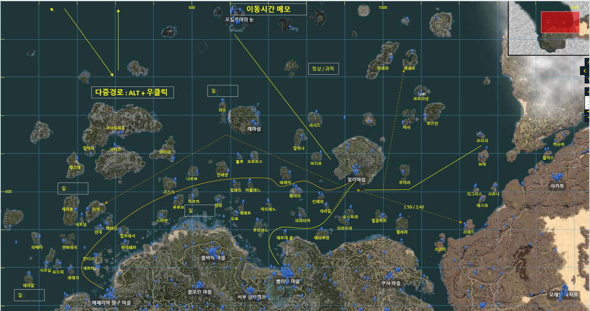
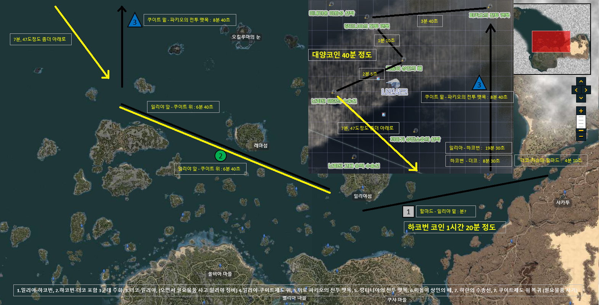

▢ 인벤 : 중범선 증축표 참고링크
▢ 중범선 점진/균형/용맹/비상 수량 정리표 [점진먼저 물교용, 다음목표 용맹]

▢ 중범선 점진/균형 : 일리아 물교퀘 3회로 변경 (라비켈 I,II, 세렌디아 병사)

▢ 중범선 용맹/비상

▢ 중범(용맹/비상) 증축식 펌
▢ 파템제작 순서(증축전에 사용하기 위함) : 1. 함포, 2. 선수상(속도), 3. 돛,장갑은 재료 되는대로.
▢ 파템제작되면 강화 : 1~5단=온기를 품은 블랙스톤(10주화)[2~4단물물교환], 6~10단=한기가 서린 블랙스톤(20주화)[2~4단물물교환] [녹템 강화도 같은거 쓴다]
▢ 무역선(노템), 무역선(녹템10강), 무역선(★파템10강★), 중범선_점진(노템),중범선_점진(녹템10강),중범선_점진(★파템10강★)
▢ 구축함(노템), 구축함(녹템10강), 구축함(★파템10강★), 중범선_용맹(노템),중범선_용맹(녹템10강),중범선_용맹(★파템10강★)
▢ 구축함과 무역선 비교 (중범선 점진, 비상 비교)

▢ 남은 교섭력
▢ 차감후 교섭
위, 배+장비무게, 펫등무게 변경
X 1.7
선원
여유무게
2단(800)
3단(900)
4,5단(천)
▢ 배+장비무게 , 최대적재 , , : , ,
▢ 배+장비무게 , 최대적재 , , : , ,
▢ 나의무게[무역품개수], 첫칸은 무게 , , : , ,
,
,
,
,
,
▢ 이동시간_잡다한것
필요수
보유수
남은수
일
get
get
일퀘수
중범선-용맹
함포
선수상
흑장갑
돛

일반재료
[일일]그믐달 길드의 나인샤크 사냥꾼, 달의 핏줄이 새겨진 아마포 3
[일일]그믐달 길드의 검은무쇠이빨 사냥꾼, 심해의 눈물 1
[일일]너도 좋고, 나도 좋고, 짙은 파도빛이 감도는 규격 각목 3
[물교]화려한 암염 주괴
[물교]화려한 진주 결정

▢ 자동이동시간 참고
▢ 대양 마고리아 12별

▢ 레마섬과 까마귀 둥지, 온기를 품은 블랙스톤(10주화), 한기가 서린 블랙스톤(20주화)